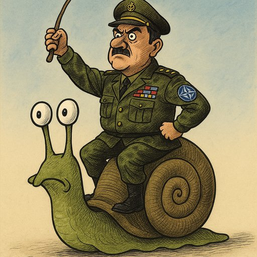

Publicado em 2025-06-21 21:23:30
"Não seremos dos mais rápidos… mas também não ficaremos para trás."
Disse o ministro das Finanças, Joaquim Miranda Sarmento, com o ar solene de quem acabou de reinventar o conceito de avanço estratégico.
Sim, senhoras e senhores, Portugal decidiu: vai marchar com a NATO… mas devagarinho, para não tropeçar. Uma espécie de defesa slow food, feita com carinho, parcimónia e uma pitada de fado.
Enquanto alguns países investem em defesa com foguetes hipersónicos e drones de precisão, Portugal opta pelo investimento gradual — isto é, primeiro faz promessas, depois declara intenções, mais tarde analisa comissões, e só depois… talvez… aprove um orçamento.
Porque, convenhamos, nós somos dos que vão… quando já toda a gente foi, e isso tem o seu charme. É o chamado “efeito saudade logística”.
O plano é claro:
– Não correr.
– Não gastar já.
– E dar entrevistas bonitas.
O novo lema das Forças Armadas Portuguesas?
“Firmes… mas com moderação.”
Portugal apresenta-se como o caracol heróico da NATO: devagar, mas com armadura. Sempre atento, embora sem grande urgência.
Tal como na educação, na saúde ou na justiça — há sempre um plano, só falta executá-lo… com tempo. Muito tempo.
O mundo muda, as ameaças crescem, mas Portugal está lá.
Não com tanques, mas com talento.
Não com mísseis, mas com moderação.
E sempre, sempre com muito orgulho nacional.
"Portugal não será dos mais rápidos da NATO, mas também não será dos mais eficazes. E nisso, conseguimos ser absolutamente coerentes."